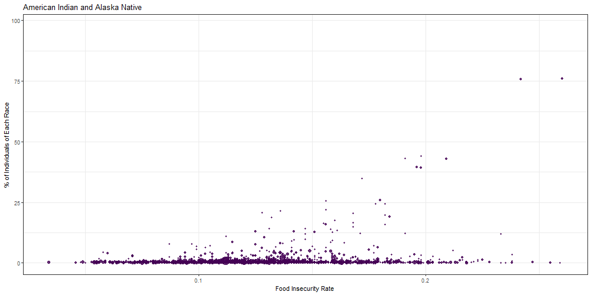
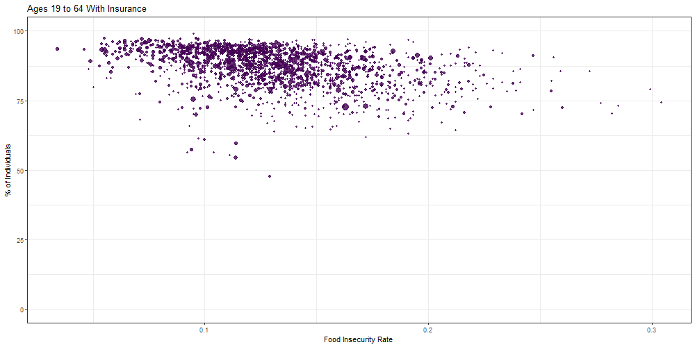

See the Gap
Vasili Fokaidis
library(tidyverse)## ── Attaching packages ─────────────────────────────────────────────────── tidyverse 1.3.0 ──## ✓ ggplot2 3.3.2 ✓ purrr 0.3.4
## ✓ tibble 3.0.3 ✓ dplyr 1.0.2
## ✓ tidyr 1.1.2 ✓ stringr 1.4.0
## ✓ readr 1.3.1 ✓ forcats 0.5.0## ── Conflicts ────────────────────────────────────────────────────── tidyverse_conflicts() ──
## x dplyr::filter() masks stats::filter()
## x dplyr::lag() masks stats::lag()library(gganimate)
library(flexdashboard)
knitr::opts_chunk$set(
echo = TRUE,
warning = FALSE,
fig.width = 8,
fig.height = 6,
out.width = "90%"
)
theme_set(theme_minimal() + theme(legend.position = "bottom"))
options(
ggplot2.continuous.colour = "viridis",
ggplot2.continuous.fill = "viridis"
)
scale_colour_discrete = scale_colour_viridis_d
scale_fill_discrete = scale_fill_viridis_dRead in acs race data and acs hispanic data. And manipulate respective data to make scatter plots.
race_df =
read_csv("ACS_data/ACS_2017_race.csv") %>%
rename(
total = "K200201_001E",
white = "K200201_002E",
black = "K200201_003E",
am_ind_al_nat = "K200201_004E",
asian = "K200201_005E",
nat_ha_pac_isl = "K200201_006E",
other = "K200201_007E",
two_or_more = "K200201_008E",
county_state = "NAME"
) %>%
janitor::clean_names() %>%
select(geo_id, county_state, total, white, black, am_ind_al_nat, asian, nat_ha_pac_isl, other, two_or_more) %>%
slice(-1) %>%
mutate(
total = as.numeric(total),
white = as.numeric(white),
black = as.numeric(black),
am_ind_al_nat = as.numeric(am_ind_al_nat),
asian = as.numeric(asian),
nat_ha_pac_isl = as.numeric(nat_ha_pac_isl),
other = as.numeric(other),
two_or_more = as.numeric(two_or_more)
)## Parsed with column specification:
## cols(
## GEO_ID = col_character(),
## NAME = col_character(),
## K200201_001E = col_character(),
## K200201_001M = col_character(),
## K200201_002E = col_character(),
## K200201_002M = col_character(),
## K200201_003E = col_character(),
## K200201_003M = col_character(),
## K200201_004E = col_character(),
## K200201_004M = col_character(),
## K200201_005E = col_character(),
## K200201_005M = col_character(),
## K200201_006E = col_character(),
## K200201_006M = col_character(),
## K200201_007E = col_character(),
## K200201_007M = col_character(),
## K200201_008E = col_character(),
## K200201_008M = col_character()
## )hispanic_df =
read_csv("ACS_data/ACS_2017_hispanic.csv") %>%
rename(
total = "K200301_001E",
hispanic = "K200301_003E",
county_state = "NAME"
) %>%
janitor::clean_names() %>%
select(geo_id, county_state, total, hispanic) %>%
slice(-1) %>%
mutate(
total = as.numeric(total),
hispanic = as.numeric(hispanic)
)## Parsed with column specification:
## cols(
## GEO_ID = col_character(),
## NAME = col_character(),
## K200301_001E = col_character(),
## K200301_001M = col_character(),
## K200301_002E = col_character(),
## K200301_002M = col_character(),
## K200301_003E = col_character(),
## K200301_003M = col_character()
## )Percent function, and percents of each race by county.
per_f = function(x) {
x/race_df$total * 100
}
per_f_h = function(y) {
y/hispanic_df$total * 100
}
race_df =
race_df %>%
mutate(
white = per_f(white),
black = per_f(black),
am_ind_al_nat = per_f(am_ind_al_nat),
asian = per_f(asian),
nat_ha_pac_isl = per_f(nat_ha_pac_isl),
other = per_f(other),
two_or_more = per_f(two_or_more)
)
hispanic_df =
hispanic_df %>%
mutate(
hispanic = per_f_h(hispanic)
) %>%
select(geo_id, hispanic)
race_hisp_df =
inner_join(x = race_df, y = hispanic_df, by = "geo_id", all = TRUE)Read in 2017 mtm data, and merge with acs race data.
mtm_2017 =
read_csv("mtm_acs_2017_df.csv") %>%
rename(
geo_id = id
)## Parsed with column specification:
## cols(
## .default = col_double(),
## state = col_character(),
## county = col_character(),
## county_state = col_character(),
## low_threshold_type = col_character(),
## high_threshold_type = col_character(),
## zip = col_character(),
## id = col_character(),
## estimate_total_hispanic_data = col_character(),
## estimate_total_not_hispanic_or_latino = col_character(),
## estimate_total_hispanic_or_latino = col_character(),
## estimate_total_immigration_data = col_character(),
## estimate_total_u_s_citizen = col_character(),
## estimate_total_not_a_u_s_citizen = col_character(),
## estimate_total_race_data = col_character(),
## estimate_total_white_alone = col_character(),
## estimate_total_black_or_african_american_alone = col_character(),
## estimate_total_american_indian_and_alaska_native_alone = col_character(),
## estimate_total_asian_alone = col_character(),
## estimate_total_native_hawaiian_and_other_pacific_islander_alone = col_character(),
## estimate_total_some_other_race_alone = col_character()
## # ... with 1 more columns
## )## See spec(...) for full column specifications.mtm_2017_acs_2017_race_df =
inner_join(x = race_hisp_df, y = mtm_2017, by = "geo_id", all = TRUE)
write_csv(x = mtm_2017_acs_2017_race_df, "mtm_2017_acs_2017_race_df.csv")Making transitioning graph for food insecurity by percent of race in each county across the U.S.
Row
Chart A
race_per_plot =
mtm_2017_acs_2017_race_df %>%
pivot_longer(
white:hispanic,
names_to = "race",
values_to = "percents"
) %>%
mutate(
race = str_replace(race, "white", "White"),
race = str_replace(race, "black", "Black"),
race = str_replace(race, "am_ind_al_nat", "American Indian and Alaska Native"),
race = str_replace(race, "asian", "Asian"),
race = str_replace(race, "nat_ha_pac_isl", "Native Hawaiian and Other Pacific Islander"),
race = str_replace(race, "other", "Other Race"),
race = str_replace(race, "two_or_more", "Two or More Races"),
race = str_replace(race, "hispanic", "Hispanic")
) %>%
select(geo_id, total, race, percents, fi_rate) %>%
drop_na() %>%
ggplot(aes(x = fi_rate, y = percents, size = total, color = race)) +
geom_point(show.legend = FALSE, alpha = 0.8) +
labs(
title = '{closest_state}',
x = "Food Insecurity Rate",
y = "% Race Within Each County"
) +
theme_bw() +
transition_states(race, transition_length = 1, state_length = 3, wrap = TRUE) +
enter_fade() +
exit_fade() +
ease_aes('cubic-in-out')
animate(race_per_plot, fps = 5, height = 500, width = 1000)
Read in education attainment acs data.
edu_att =
read_csv("ACS_data/ACS_2017_edu.csv") %>%
rename(
total = "K201501_001E",
less_9th = "K201501_002E",
nineth_to_12th = "K201501_003E",
hs_grad = "K201501_004E",
some_coll = "K201501_005E",
assoc_deg = "K201501_006E",
bach_deg = "K201501_007E",
grad_or_prof = "K201501_008E",
county_state = "NAME"
) %>%
janitor::clean_names() %>%
select(geo_id, total, less_9th, nineth_to_12th, hs_grad, some_coll, assoc_deg, bach_deg, grad_or_prof) %>%
slice(-1) %>%
mutate(
total = as.numeric(total),
less_9th = as.numeric(less_9th),
nineth_to_12th = as.numeric(nineth_to_12th),
hs_grad = as.numeric(hs_grad),
some_coll = as.numeric(some_coll),
assoc_deg = as.numeric(assoc_deg),
bach_deg = as.numeric(bach_deg),
grad_or_prof = as.numeric(grad_or_prof))## Parsed with column specification:
## cols(
## GEO_ID = col_character(),
## NAME = col_character(),
## K201501_001E = col_character(),
## K201501_001M = col_character(),
## K201501_002E = col_character(),
## K201501_002M = col_character(),
## K201501_003E = col_character(),
## K201501_003M = col_character(),
## K201501_004E = col_character(),
## K201501_004M = col_character(),
## K201501_005E = col_character(),
## K201501_005M = col_character(),
## K201501_006E = col_character(),
## K201501_006M = col_character(),
## K201501_007E = col_character(),
## K201501_007M = col_character(),
## K201501_008E = col_character(),
## K201501_008M = col_character()
## )Percent function, and percents for education attainment % by county.
per_f_edu = function(x) {
x/edu_att$total * 100
}
edu_att =
edu_att %>%
mutate(
less_9th = per_f_edu(less_9th),
nineth_to_12th = per_f_edu(nineth_to_12th),
hs_grad = per_f_edu(hs_grad),
some_coll = per_f_edu(some_coll),
assoc_deg = per_f_edu(assoc_deg),
bach_deg = per_f_edu(bach_deg),
grad_or_prof = per_f_edu(grad_or_prof)
)Merge with acs education data.
mtm_2017_edu_2017_att_df =
inner_join(x = edu_att, y = mtm_2017, by = "geo_id", all = TRUE)
write_csv(x = mtm_2017_edu_2017_att_df, "mtm_2017_edu_2017_att_df.csv")Making transitioning graph for food insecurity by percent of education attainment category in each county across the U.S.
Chart B
edu_per_plot =
mtm_2017_edu_2017_att_df %>%
pivot_longer(
less_9th:grad_or_prof,
names_to = "edu_att",
values_to = "percents"
) %>%
mutate(
edu_att = str_replace(edu_att, "less_9th", "Less Than 9th Grade"),
edu_att = str_replace(edu_att, "nineth_to_12th", "9th to 12th Grade"),
edu_att = str_replace(edu_att, "hs_grad", "High School Graduate"),
edu_att = str_replace(edu_att, "some_coll", "Some College"),
edu_att = str_replace(edu_att, "assoc_deg", "Associate's Degree"),
edu_att = str_replace(edu_att, "bach_deg", "Bachelor's Degree"),
edu_att = str_replace(edu_att, "grad_or_prof", "Graduate or Professional Degree")
) %>%
select(geo_id, total, edu_att, percents, fi_rate) %>%
drop_na() %>%
ggplot(aes(x = fi_rate, y = percents, size = total, color = edu_att)) +
geom_point(show.legend = FALSE, alpha = 0.8) +
labs(
title = '{closest_state}',
x = "Food Insecurity Rate",
y = "% Education Attainment Within Each County"
) +
theme_bw() +
transition_states(edu_att, transition_length = 1, state_length = 3, wrap = TRUE) +
enter_fade() +
exit_fade() +
ease_aes('cubic-in-out')
animate(edu_per_plot, fps = 5, height = 500, width = 1000)
Read in insurance acs data.
ins_status =
read_csv("ACS_data/ACS_2017_ins_status.csv") %>%
rename(
total = "K202701_001E",
tot_under_19 = "K202701_002E",
y_under_19 = "K202701_003E",
n_under_19 = "K202701_004E",
tot_19_64 = "K202701_005E",
y_19_64 = "K202701_006E",
n_19_64 = "K202701_007E",
tot_65_over = "K202701_008E",
y_65_over = "K202701_009E",
n_65_over = "K202701_010E"
) %>%
janitor::clean_names() %>%
select(geo_id, total, tot_under_19, y_under_19, n_under_19, tot_19_64, y_19_64, n_19_64, tot_65_over, y_65_over, n_65_over) %>%
slice(-1) %>%
mutate(
total = as.numeric(total),
tot_under_19 = as.numeric(tot_under_19),
y_under_19 = as.numeric(y_under_19),
n_under_19 = as.numeric(n_under_19),
tot_19_64 = as.numeric(tot_19_64),
y_19_64 = as.numeric(y_19_64),
n_19_64 = as.numeric(n_19_64),
tot_65_over = as.numeric(tot_65_over),
y_65_over = as.numeric(y_65_over),
n_65_over = as.numeric(n_65_over)
)## Parsed with column specification:
## cols(
## .default = col_character()
## )## See spec(...) for full column specifications.Percent function, and percents for insurance status % by county.
per_f_ins = function(x, y) {
x/y * 100
}
ins_status =
ins_status %>%
mutate(
y_under_19 = per_f_ins(y_under_19, tot_under_19),
n_under_19 = per_f_ins(n_under_19, tot_under_19),
y_19_64 = per_f_ins(y_19_64, tot_19_64),
n_19_64 = per_f_ins(n_19_64, tot_19_64),
y_65_over = per_f_ins(y_65_over, tot_65_over),
n_65_over = per_f_ins(n_65_over, tot_65_over)
)Merge with acs insurance data.
mtm_2017_ins_2017_status_df =
inner_join(x = ins_status, y = mtm_2017, by = "geo_id", all = TRUE)
write_csv(x = mtm_2017_ins_2017_status_df, "mtm_2017_ins_2017_status_df.csv")Making transitioning graph for food insecurity by percent of insurance status category in each county across the U.S.
Row
Chart C
ins_status_plot =
mtm_2017_ins_2017_status_df %>%
select(-tot_19_64, -tot_under_19, - tot_65_over) %>%
pivot_longer(
y_under_19:n_65_over,
names_to = "ins_status",
values_to = "percents"
) %>%
mutate(
ins_status = str_replace(ins_status, "y_under_19", "Under Age 19 With Insurance"),
ins_status = str_replace(ins_status, "n_under_19", "Under Age 19 Without Insurance"),
ins_status = str_replace(ins_status, "y_19_64", "Ages 19 to 64 With Insurance"),
ins_status = str_replace(ins_status, "n_19_64", "Ages 19 to 64 Without Insurance"),
ins_status = str_replace(ins_status, "y_65_over", "Over Age 65 With Insurance"),
ins_status = str_replace(ins_status, "n_65_over", "Over Age 65 Without Insurance"),
) %>%
select(geo_id, total, ins_status, percents, fi_rate) %>%
drop_na() %>%
ggplot(aes(x = fi_rate, y = percents, size = total, color = ins_status)) +
geom_point(show.legend = FALSE, alpha = 0.8) +
labs(
title = '{closest_state}',
x = "Food Insecurity Rate",
y = "% of Individuals"
) +
theme_bw() +
transition_states(ins_status, transition_length = 1, state_length = 3, wrap = TRUE) +
enter_fade() +
exit_fade() +
ease_aes('cubic-in-out')
animate(ins_status_plot, fps = 5, height = 500, width = 1000)
Read in income acs data.
income_brac =
read_csv("ACS_data/ACS_2017_income.csv") %>%
rename(
total = "K201901_001E",
less_20 = "K201901_002E",
twenty_39 = "K201901_003E",
forty_59 = "K201901_004E",
sixty_99 = "K201901_005E",
hun_149 = "K201901_006E",
hunfifty_199 = "K201901_007E",
twohun_more = "K201901_008E"
) %>%
janitor::clean_names() %>%
select(geo_id, total, less_20, twenty_39, forty_59, sixty_99, hun_149, hunfifty_199, twohun_more) %>%
slice(-1) %>%
mutate(
total = as.numeric(total),
less_20 = as.numeric(less_20),
twenty_39 = as.numeric(twenty_39),
forty_59 = as.numeric(forty_59),
sixty_99 = as.numeric(sixty_99),
hun_149 = as.numeric(hun_149),
hunfifty_199 = as.numeric(hunfifty_199),
twohun_more = as.numeric(twohun_more)
)## Parsed with column specification:
## cols(
## GEO_ID = col_character(),
## NAME = col_character(),
## K201901_001E = col_character(),
## K201901_001M = col_character(),
## K201901_002E = col_character(),
## K201901_002M = col_character(),
## K201901_003E = col_character(),
## K201901_003M = col_character(),
## K201901_004E = col_character(),
## K201901_004M = col_character(),
## K201901_005E = col_character(),
## K201901_005M = col_character(),
## K201901_006E = col_character(),
## K201901_006M = col_character(),
## K201901_007E = col_character(),
## K201901_007M = col_character(),
## K201901_008E = col_character(),
## K201901_008M = col_character()
## )Percent function, and percents for income bracket % by county.
per_f_inco = function(x) {
x/income_brac$total * 100
}
income_brac =
income_brac %>%
mutate(
less_20 = per_f_inco(less_20),
twenty_39 = per_f_inco(twenty_39),
forty_59 = per_f_inco(forty_59),
sixty_99 = per_f_inco(sixty_99),
hun_149 = per_f_inco(hun_149),
hunfifty_199 = per_f_inco(hunfifty_199),
twohun_more = per_f_inco(twohun_more)
)Merge with acs income data.
mtm_2017_income_2017_brac_df =
inner_join(x = income_brac, y = mtm_2017, by = "geo_id", all = TRUE)
write_csv(x = mtm_2017_income_2017_brac_df, "mtm_2017_income_2017_brac_df.csv")Making transitioning graph for food insecurity by percent of income bracket in each county across the U.S.
Chart D
income_brac_plot =
mtm_2017_income_2017_brac_df %>%
pivot_longer(
less_20:twohun_more,
names_to = "income_brac",
values_to = "percents"
) %>%
mutate(
income_brac = str_replace(income_brac, "less_20", "Less Than $20,000"),
income_brac = str_replace(income_brac, "twenty_39", "Between $20,000 and $39,999"),
income_brac = str_replace(income_brac, "forty_59", "Between $40,000 and $59,999"),
income_brac = str_replace(income_brac, "sixty_99", "Between $60,000 and $99,999"),
income_brac = str_replace(income_brac, "hun_149", "Between $100,000 and $149,999"),
income_brac = str_replace(income_brac, "hunfifty_199", "Between $150,000 and $199,999"),
income_brac = str_replace(income_brac, "twohun_more", "$200,000 or More")
) %>%
select(geo_id, total, income_brac, percents, fi_rate) %>%
drop_na() %>%
ggplot(aes(x = fi_rate, y = percents, size = total, color = income_brac)) +
geom_point(show.legend = FALSE, alpha = 0.8) +
labs(
title = '{closest_state}',
x = "Food Insecurity Rate",
y = "% of Individuals in Each Income Bracket"
) +
theme_bw() +
transition_states(income_brac, transition_length = 1, state_length = 3, wrap = TRUE) +
enter_fade() +
exit_fade() +
ease_aes('cubic-in-out')
animate(income_brac_plot, fps = 5, height = 500, width = 1000)